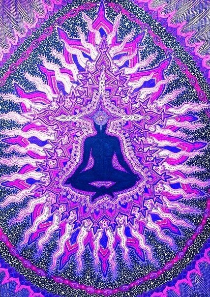

6 чакра "Аджна"|Расшифровка, где находится, как раскрыть
Чакры - это энергетические центры в теле человека, которые отвечают за наше самочувствие. Подробнее об этом здесь, а в этой статье мы поговорим о шестой чакре - Аджна
6 чакра "Аджна" (чакра третьего глаза) - отвечает за духовное общение, восприятие и осознание.
- Расположение: лоб, зона между бровями
- Внешний вид: фиолетовый лотос с двумя лепестками, в центре которого расположен треугольник
- Функции: отвечает за восприятие окружающего мира, силу мысли и её материализацию, интуицию, уровень осознанности и мозговую деятельность
Симптомы заблокированной энергии:
- Головные боли, мигрень (физика)
- Головокружения (физика)
- Проблемы со зрением и ушами (физика)
- Неврологические заболевания, мозговые расстройства (физика)
- Психологические расстройства (энергия)
- Депрессия/тревога (энергия)
- Трусость, зажатость, самоограничивающие убеждения (энергия)
Отсутствие глобальной цели, места в жизни. Дисбаланс между внутренним и внешним миром.
Что блокирует энергию:
Ограничивающие и подавляющие установки, чаще всего получаемые в детстве (ты не сможешь, не мечтай зря и т.п.). Диеты с большим содержанием обработанных продуктов. Плохая работа нижних пяти чакр, отрыв от природы.
Как открыть чакру третьего глаза:
Балансировка предыдущих 5 чакр. Йога, медитации и мантры (направленные на раскрытие шестой чакры, к примеру - кундалини). Включить фиолетовые оттенки (одежда, пища) в свою жизнь, использовать соответствующие камни (в медитациях или просто носить с собой).
Осознанность, замедление, внимание на мелочах, отказ от осуждения. Занятие творчеством, благотворительность.
Как понять, что чакра открыта и сбалансирована?
Сильное чувство интуиции, восприятие, выходящее за рамки обычного зрения. Способность видеть ауру, оценивать себя со стороны, ясновидение, материализация мыслей. Ясный ум, спокойствие, доверие к жизни.
Хорошее зрение и память. Умение управлять собой, своими мыслями, желаниями и эмоциями. При раскрытии возможен шум в ушах или боль во лбу.